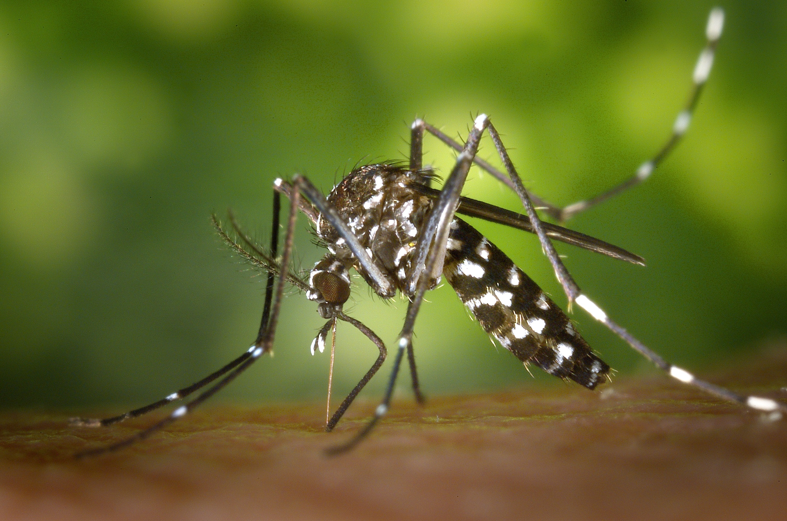

Why Europe has no malaria?
Malaria was eradicated from Europe in the 1970s through a combination
of insecticide spraying, drug therapy and environmental engineering.

How to prevent mosquito
- Use screens on windows and doors. Repair holes in screens to keep mosquitoes outdoors.
- Use air conditioning, if available.
- Stop mosquitoes from laying eggs in or near water.
- you can realease guppies in water buckets.
- Use an indoor insect fogger or indoor insect spray to kill mosquitoes and treat areas where they rest.
- keep your environment clean
- if you like gardens you can use this advantage. Try to ensure healthy eco-system in your garden
click here to know how to prevent mosqouitos in natural way